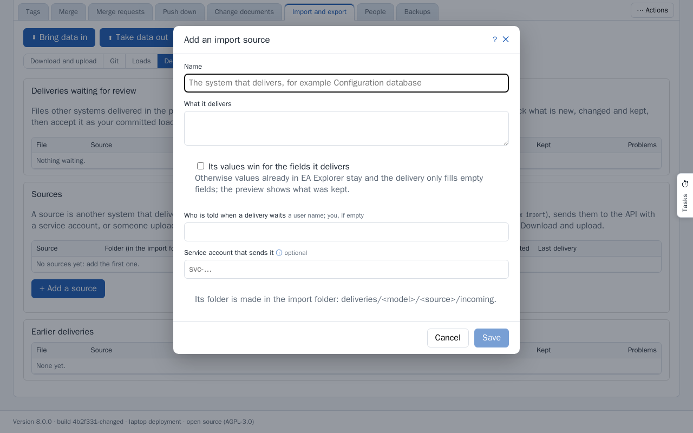

Set up a delivery source
For: Model Admin, Developers
Another system sends its data to a model as deliveries, each previewed and accepted by a Committer.

#/metamodel/{m}/import/deliveriesWhy do this
A delivery source names a system that sends data, the folder it uses, whether its values win, and who is told. Set up once, it brings data in on every delivery for review. See Data in and out: integration.
Every route in ends the same way: what arrives is shown as new, changed, kept and problem rows, and a person decides. That review is what lets you automate feeds without losing control of the model.
In TOGAF terms: Supports the content of phases B, C and D (baseline architectures), keeping the Architecture Landscape current from the systems that already know it. See EA Explorer and the TOGAF Standard.
The goal: Another system can deliver data to a model.
Before you start You need Model Admin on the model. For a system that sends through the API, a service account with a token (System Admin › Machine access).
Steps
- Open the model, Import and export › Deliveries.
- Add a source: its name, its folder, whether its values win over EA Explorer's, who is told, and optionally the service account that sends it.
- The system then sends deliveries in the Excel or CSV format, by a folder, the API or an upload (see the related page).
- Each delivery is previewed (new, changed, kept, unchanged, problems) and waits. A Committer, Model Sub Admin or Model Admin accepts it (committed as their load, undone like any load) or declines it.